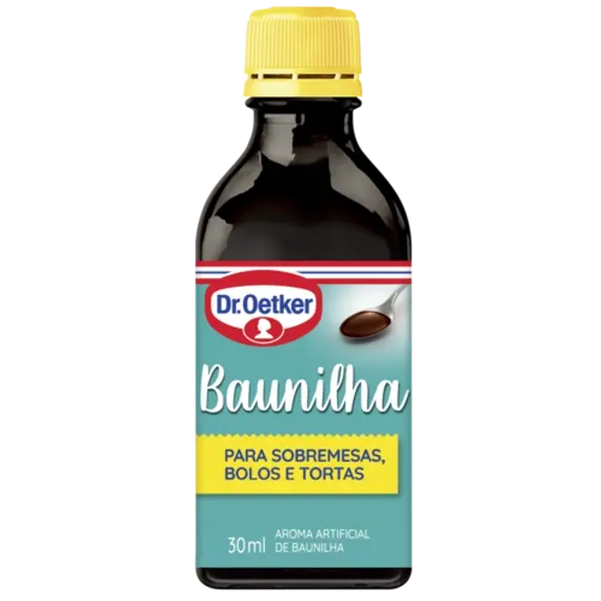
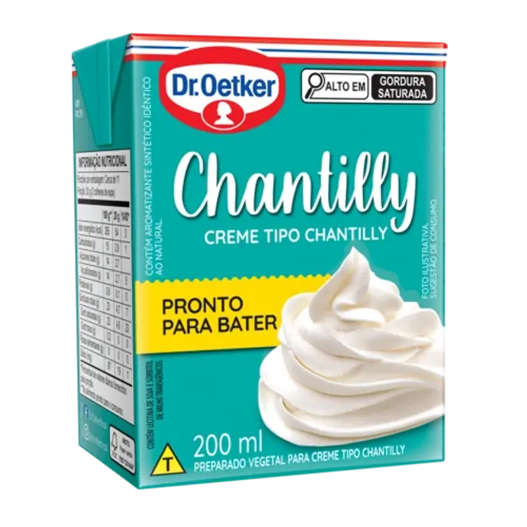
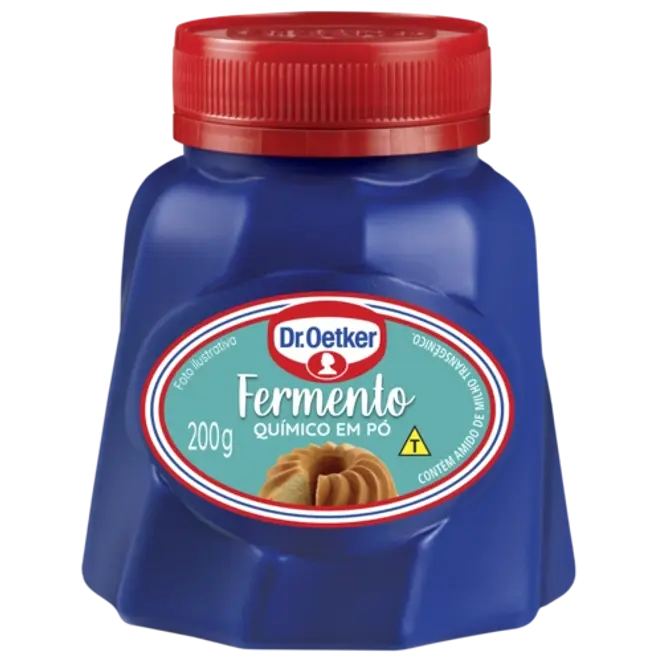
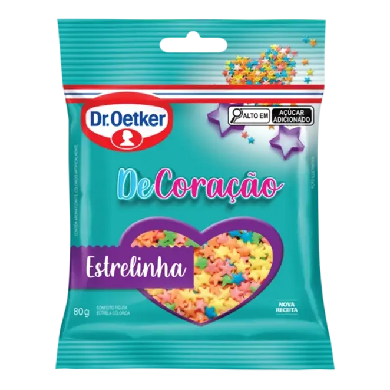

Home
Receita1
Receita2
Receita3
Receita 1

Se você está buscando uma maneira divertida e fácil de trazer alegria para uma festa, os cupcakes festivos são a
escolha perfeita! Utilizando o chantilly da Dr. Oetker, você pode dar um toque especial e irresistível aos seus
bolinhos. Esses cupcakes são fáceis de preparar ficam macios e fofinhos...
Veja a receita completa...
INGREDIENTES
- 1 ½ xícaras chá de
Farinha de Trigo
- ½ xícara chá de
Manteiga
- 1 xícara chá de
Açúcar
- ½ xícara chá de
Leite
- ½ colher chá de
Aroma de Baunilha Dr. Oetker
- 2 unidades de
Ovos
- 1 caixa de
Chantilly UHT Dr. Oetker
- ½ colher sopa de
Fermento em Pó Quimico Dr. Oetker
- 1 pacote de
Confeito Estrelinhas Dr. Oetker
VEJA COMO É FÁCIL PREPARAR
- 1.Bata a manteiga, os ovos e o açúcar na batedeira até formar um creme homogêneo. Reduza a velocidade,
adicione a farinha e o leite, e bata por 3 minutos. Misture o fermento e, por fim, incorpore um pouco de
confeito colorido.
- Coloque porções da massa nas forminhas de cupcake e asse em forno preaquecido a 180°C por 20 minutos.
- Enquanto assa, prepare o chantilly conforme as instruções da embalagem. Após esfriar, decore os cupcakes
com chantilly e confeitos coloridos.
VER PRODUTOS

Aroma de Baunilha Dr. OetkerAroma de Baunilha Dr. Oetker

Creme Tipo Chantilly UHT

Fermento Químico em Pó 200g

Confete Colorido